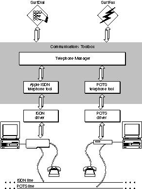
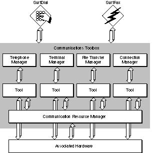

About Telephony on Macintosh Computers
Telephony is the process of managing telephones, particularly of establishing and controlling connections between telephones on a telephone network. The Telephone Manager is the part of the Macintosh system software that you can use to develop applications and other software that provide telephony capabilities. For example, you can use the Telephone Manager to place outgoing telephone calls, answer incoming telephone calls, place calls on hold or transfer them to other telephones, and accomplish many other similar tasks. The data transferred during a telephone call can be either voice, modem, or fax data, or indeed any kind of data that can be encoded for transmission across a telephone network.The Telephone Manager provides a set of simple but powerful programming interfaces that you can use to support telephony activities. The Telephone Manager operates independently of the particular telephone network or networks to which a user's computer is connected. Accordingly, your application can provide telephony services whether the Macintosh computer on which it is executing is connected to an integrated services digital network (ISDN), to a private branch exchange (PBX), or to "plain old telephone service" (POTS).
Telephone Tools
The Telephone Manager accesses a specific telephone network using a telephone tool, a software module that manages the connection between a network and the telephony applications or other software running on a Macintosh computer. Telephone tools control the device drivers of the telephony hardware (such as an ISDN card) installed on the user's system. Each telephone tool is designed for specific hardware. For example, the Apple ISDN Telephone Tool is designed for the Apple ISDN NB Card. Figure 1-1 illustrates the relations among your application, the Telephone Manager, telephone tools, and the hardware driven by those tools.Figure 1-1 The position of the Telephone Manager and telephone tools

Your application calls a Telephone Manager function when it needs a particular service, such as dialing a telephone number. The Telephone Manager then sends one or more messages to the appropriate telephone tool. The tool provides the requested service using the specific protocol of the network it manages. While providing the service, the telephone tool sends messages back to the Telephone Manager to indicate the progress of the request. In turn, the Telephone Manager relays those messages to your application.
The Telephone Manager is part of the Communications Toolbox, the part of the Macintosh system software that manages basic networking and communications services (such as file transfer and terminal emulation). Telephone tools operate just like any other tools associated with the Communications Toolbox, as illustrated in Figure 1-2. The only difference between telephone tools and other Communications Toolbox tools is that telephone tools can both send and receive messages, whereas other tools can only receive messages.
Figure 1-2 The architecture of the Communications Toolbox

Local and Remote Operations
The Telephone Manager allows your application to provide telephony services both to the local user (that is, to the user operating the computer's mouse, keyboard, monitors, and other devices) and to remote users connected to the computer over a telephone line. To the local user, you can provide control over any telephony devices connected to the computer, such a telephone set, a fax machine, or a modem. For example, when the user lifts the handset of a telephone set, your application might display a list of names or numbers to call. Then, if the user clicks on a name or number, your application can dial the appropriate number. (This is one kind of screen-based telephony.)For remote users, you can provide other telephony services. For example, your application might answer incoming calls and provide a message recording and playback service. Or, in conjunction with speech recognition capabilities, your application could listen for spoken commands and then execute them. Similarly, your application could use the Speech Synthesis Manager to read electronic mail messages received by the local computer.
The Telephone Manager informs your application when there is an incoming call. You can, if you choose, immediately call a Telephone Manager function to answer the call, or you can let the user answer the call by picking up the handset or by clicking a button on the screen. If neither your application nor the user answers the call, and if the Auto-answer feature is enabled, the Telephone Manager can automatically answer the call after the number of rings selected by the user in the Auto-answer control panel (called the auto-answer ring count).
The Telephone Manager also supports the Call Saver feature, where it automatically answers on a different number of rings (the call saver ring count) if there are messages pending. The call saver ring count is always at least two rings less than the auto-answer ring count. When the Call Saver feature is enabled, a remote user can call up and wait until the phone has rung the call saver ring count plus one. If the phone hasn't been answered, there are no messages pending and the user can hang up.
Sound Streams
The latest versions of the Telephone Manager allow your application to access the sound streams associated with a telephone set--that is, the device driver of the hardware that provides the sound input (for example, a handset microphone) and the sound component for the hardware that provides the sound output (for example, a handset speaker). You can use the Sound Input Manager to record sound from an input device and the Sound Manager to play back that recorded sound on the output device. As a result, you can use the Telephone Manager, in conjunction with those other managers, to develop a general-purpose computer-based answering machine. Similarly, you can use the Speech Synthesis Manager to convert written text into computer generated speech and then send that speech over the telephone line. This would allow your application to read an electronic mail message over a telephone line.Telephone Terminals
Most Telephone Manager functions operate on one of three kinds of objects: telephone terminals, directory numbers, and call appearances. This section and the following two sections introduce these objects. For complete details on telephone terminals, directory numbers, and call appearances, see the following three chapters.A telephone terminal (or, more briefly, a terminal) is any hardware device (such as an ISDN card) that provides a physical interface between a Macintosh computer and a telephone network (such as a private branch exchange or central-office switch). A telephone terminal might also provide a physical interface between the telephone network switch and a telephone set attached to the Macintosh computer. A telephone set is any hardware device that can be used to manually dial, answer, or otherwise manipulate telephone calls.
A telephone terminal can consist of one or more distinct physical parts. For example, the Apple ISDN NB Card is a telephone terminal that is one integrated device, whereas the Apple Serial NB Card and a modem are separate devices that together can function as a terminal. (See Figure 1-1 on page 1-7.) A telephone terminal is controlled by a standard Macintosh device driver, which is usually supplied by the manufacturer of the terminal.
- Note
- Don't confuse telephone terminals with telephone sets. A telephone set is what you would normally think of as a telephone. A telephone terminal is the physical link between a Macintosh computer and a telephone network. A user needs only a telephone terminal to use the Telephone Manager.
Directory Numbers
Each installed telephone terminal is associated with at least one directory number, a named reference point (such as (408)�555-1212) that is used to initiate or receive calls on the terminal. Directory numbers are assigned to the user of the terminal by, for instance, the local telephone company. A terminal can have multiple directory numbers (just as a typical telephone set in an office might have multiple buttons, one for each telephone number of that office). A directory number can, in turn, have multiple network subaddresses.The Telephone Manager uses two types of directory numbers: physical and logical. Physical directory numbers can be monitored or controlled from the user's Macintosh computer and are physically associated with it. In contrast, logical directory numbers are not physically associated with the user's Macintosh computer, though they may be monitored or controlled from it. For example, a Macintosh computer running the Telephone Manager and connected to the control port of a PBX might monitor all the directory numbers of that PBX. The Telephone Manager would treat those directory numbers as logical, because they would have no physical association with the Macintosh computer.
Call Appearances
A directory number can be associated with a call appearance (or, more briefly, a call). A call appearance is a connection between two or more directory numbers, for instance, when one telephone user places a call to another. Directory numbers can carry several call appearances concurrently (for instance, when a telephone has a Call Waiting feature or a Conference feature).At any particular time, each call appearance is in one particular state. For example, a call appearance might be in an alerting state (ringing or flashing), a held state (on hold), or an active state (meaning voice or data can flow end to end). The Telephone Manager provides a large number of functions that you can use to initiate, answer, or otherwise manipulate call appearances.